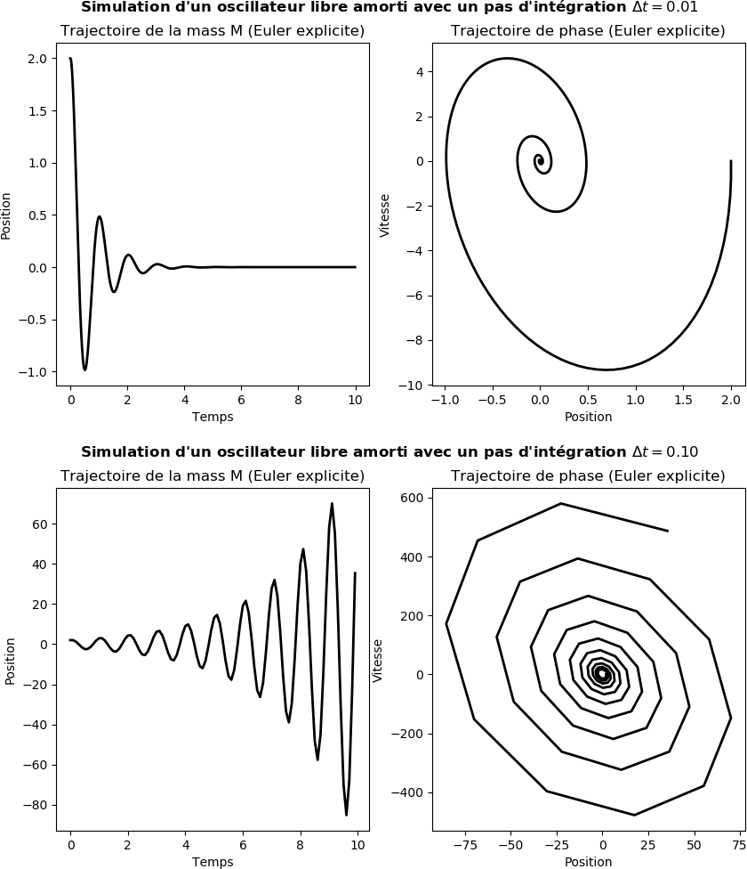

Équations différentielles ordinaires
Feb 26, 2020
Table des matières
Introduction
Convergence et de stabilité de la méthode d'Euler: Cas des systèmes linéaires
La méthode d'Euler explicite (progressive)
La méthode d'Euler implicite (rétrograde)
Exemple: Oscillateur libre amorti [masse, ressort, amortisseur]
Conclusion
La méthode de Runge-Kutta d'ordre 4
Algorithme de Runge-Kutta d'ordre 4
Exemple: Système dynamique différentiel de Lorenz (attracteur de Lorenz)
Introduction
Dans les domaines scientifiques et industriels, il est courant aujourd'hui d'étudier la nature ou les dispositifs technologiques au moyen de modèles sur ordinateur. Avec de tels modèles, l'ordinateur agit comme un laboratoire virtuel où les expériences peuvent être effectuées de manière rapide, fiable, sûre et économique.Les équations différentielles constituent l'un des outils mathématiques les plus puissants pour comprendre et prédire le comportement des systèmes dynamiques de la nature, de l'ingénierie et de la société. Un système dynamique est un système avec un état, généralement exprimé par un ensemble de variables, évoluant dans le temps. Par exemple, un pendule oscillant, la propagation d'une maladie et les conditions météorologiques sont des exemples de systèmes dynamiques. Nous pouvons utiliser les lois fondamentales de la physique, ou l'intuition simple, pour exprimer des règles mathématiques qui régissent l'évolution du système dans le temps. Ces règles prennent la forme d'équations différentielles.
Convergence et de stabilité de la méthode d'Euler: Cas des systèmes linéaires
En mécanique classique, les équations du mouvement d'un système mécanique (systèmes de points matériels, système de solides) sont des équations différentielles du second ordre par rapport au temps. La connaissance des positions et des vitesses des points à l'instant \( t=0 \) suffit à déterminer le mouvement pour \( t>0 \).Ces équations sont souvent non linéaires car les forces elles-mêmes le sont (par exemple la force de gravitation) et car l'accélération est souvent une fonction non linéaire des degrés de liberté. Dans ce cas, il est fréquent que l'on ne connaisse pas de solution analytique exacte. On est alors amené à rechercher une solution approchée par une méthode numérique.
Cette partie du cours explique le principe de ce type d'intégration numérique. On prendra l'exemple de l'oscillateur harmonique (dont la solution exacte est connue) auquel on appliquera la méthode numérique d'Euler. On abordera les notions importantes de convergence et de stabilité.
On verra aussi des variantes de la méthode d'Euler, qui peuvent être utilisées pour résoudre des systèmes conservatifs à N corps, par exemple en dynamique moléculaire.
De manière générale soit le système d'équations différentielles suivant: $$ \label{eq:sysdiff1} \begin{align} \pmb{\dot{u}} &= f(\pmb{u}) \end{align} $$ Où \( \pmb{u} \) peut être un vecteur d'état et \( f(\pmb{u}) \) peut être linéaire ou non linéaire.
Soit \( f(\pmb{u}) = \pmb{A} \cdot \pmb{u} \) avec \( \pmb{A} \) une matrice. Donc on peut écrire l'équation \eqref{eq:sysdiff1} comme suit: $$ \label{eq:sysdiff2} \begin{align} \pmb{\dot{u}} &= \pmb{A} \cdot \pmb{u} \quad avec \ \pmb{u}(t=0)=\pmb{u}_0 \end{align} $$ La solution analytique exacte d'un tel système est de la forme: $$ \label{eq:solexact1} \begin{align} \pmb{u}(t) &= e^{\pmb{A}t} \cdot \pmb{u}_0 \end{align} $$
On se propose d'appliquer différentes méthodes d'Euler au système \eqref{eq:sysdiff2}.
La méthode d'Euler explicite (progressive)
Figure 1: Illustration d'une approximation par différence progressive de la dérivée.
Si \( \pmb{\dot{u}} = \pmb{A} \cdot \pmb{u} \) alors; $$ \begin{align} \label{eq:euler_exp} \pmb{u}_{k+1} &= \pmb{u}_k + \Delta t \pmb{A} \cdot \pmb{u}_k = (\pmb{I} + \Delta t \pmb{A}) \cdot \pmb{u}_k \end{align} $$
Où \( \pmb{I} \) est la matrice identité.
La méthode d'Euler implicite (rétrograde)
Figure 2: Illustration d'une approximation par différence rétrograde de la dérivée.
Si \( \pmb{\dot{u}} = \pmb{A} \cdot \pmb{u} \) alors; $$ \begin{align} \pmb{u}_{k+1} &= \pmb{u}_k + \Delta t \pmb{A} \cdot \pmb{u}_{k+1} \label{_auto5} \end{align} $$ $$ \begin{align} (\pmb{I} - \Delta t \pmb{A}) \cdot \pmb{u}_{k+1} &= \pmb{u}_k \label{_auto6} \end{align} $$ $$ \begin{align} \label{eq:euler_imp} \pmb{u}_{k+1} &=(\pmb{I} - \Delta t \pmb{A})^{-1} \cdot \pmb{u}_k \end{align} $$
Où \( \pmb{I} \) est la matrice identité.
Exemple: Oscillateur libre amorti [masse, ressort, amortisseur]
Un bloc de masse \( m \) est lié à l'extrémité libre d'un ressort de raideur \( k \) , de longueur au repos \( l \), de masse négligeable et d'élasticité parfaite, l'autre extrémité du ressort étant fixe. Le système est supposé dans l'espace (on néglige la force de pesanteur). Le seul mouvement possible pour le bloc est une translation suivant \( x \); on assimilera le bloc à un point matériel \( M \).
Figure 3: Schéma d'un système dynamique oscillant amorti unidimensionnel.
Bilan des forces
- La force de rappel \( \overrightarrow{F_r} = - k \overrightarrow{x} \) où \( k \) est un coefficient positif et \( \overrightarrow{x} \) le vecteur position de \( M \).
- Le système est amorti. L'amortissement de type visqueux est représenté par un amortisseur qui exerce la force dissipative (ou force d'amortissement visqueux) \( \overrightarrow{F_a} = - b \overrightarrow{v} \) où \( b \) est un coefficient positif et \( \overrightarrow{v} \) le vecteur vitesse de \( M \).
Équation de mouvement
La deuxième loi de Newton pour le système peut être écrite avec l'accélération multipliée par la masse du côté gauche et la somme des forces du côté droit: $$ \begin{align} m \overrightarrow{a} &= \overrightarrow{F_a} + \overrightarrow{F_r} \label{_auto7} \end{align} $$ $$ \begin{align} m \ddot{x} &= - b \dot{x} - kx \label{_auto8} \end{align} $$ $$ \begin{align} m \ddot{x} + b \dot{x} + kx &= 0 \label{_auto9} \end{align} $$ On réécrit cette équation sous la forme canonique suivante : $$ \begin{align} \label{eq:ordre2} \ddot{x} + 2 \zeta \omega_0 \dot{x} + \omega_0^2 x &= 0 \end{align} $$ avec \( \omega_0 = \sqrt{\frac{k}{m}} \) désigne une pulsation caractéristique et \( \zeta = \frac{b}{2 \sqrt{km}} \) est une quantité positive sans dimension, appelée taux d’amortissement.C'est une équation différentielle linéaire d'ordre 2 à coefficients constants.
On peut trouver numériquement la solution de l'équation \eqref{eq:ordre2} à l'aide des méthodes d'Euler à partir du système d'équations différentielles ordinaires suivant: $$ \begin{align} \dot{x} &= v \label{_auto10}\\ \dot{v} &= - 2 \zeta \omega_0 v - \omega_0^2 x \label{_auto11}\\ \label{_auto12} \end{align} $$ $$ \label{eq:linalg} \begin{align} \frac{d}{dt} \left(\begin{array}{c} x\\ v \end{array}\right) &= \left(\begin{array}{cc} 0 & 1\\ - \omega_0^2 & - 2 \zeta \omega_0 \end{array}\right) \cdot \left(\begin{array}{c} x\\ v \end{array}\right) \end{align}$$ L'équation \eqref{eq:linalg} est de la forme: \( \dot{\pmb{u}} = \pmb{A} \cdot \pmb{u} \) avec: $$ \pmb{A}= \left(\begin{array}{cc}0&1\\- \omega_0^2 & - 2 \zeta \omega_0 \end{array}\right)$$ et $$\pmb{u} = \left(\begin{array}{c} x\\ v \end{array}\right)$$
Supposons que nous voulions résoudre le problème avec: \( \omega_0 = 2 \pi \), \( \zeta = 0.25 \), \( \pmb{u_0}= \left(\begin{array}{c} x(t=0)\\ v(t=0) \end{array}\right)= \left(\begin{array}{c} 2\\ 0 \end{array}\right) \), \( \Delta t = 0.01 \) pour \( t \in [0, 10] \). Ce sera une solution sinusoïdale amortie.
Solution avec la méthode d'Euler explicite
Nous implémentons l'expression explicite d'Euler montrée dans \eqref{eq:euler_exp} dans le code python suivant:
## NOM DU PROGRAMME: OscillateurEulerExp.py
#% IMPORTATION
import numpy as np
import matplotlib.pyplot as plt
from mpl_toolkits.mplot3d.axes3d import Axes3D
# SYSTÈME: OSCILLATEUR LIBRE AMORTI
w = 2*np.pi # fréquence propre
a = 0.25 # rapport d'amotissement
A = np.array([[0, 1], [-w**2, -2*a*w]])
dt = 0.01 # pas du temps
Tf = 10 # temps finale de la simulation
nsteps = int(Tf/dt)
# CONDITION INITIAL: à t = 0; x = 2, v = 0
u0 = np.array([2,0])
#%% ITÉRATION: EULER ExPLICITE
Texp = np.zeros(nsteps)
Uexp = np.zeros((2, nsteps))
Texp[0] = 0.0
Uexp[:,0] = u0
for k in range(nsteps-1):
Texp[k+1] = Texp[k] + dt
Uexp[:,k+1] = np.dot((np.eye(2) + dt * A), Uexp[:,k])
plt.figure(figsize=(10,5))
# PLOT POSITION vs TEMPS
plt.suptitle("Simulation d'un oscillateur libre amorti avec un pas d'intégration "+ r"$ \Delta t= %.2f$"%dt,
fontweight = "bold")
plt.subplot(1,2,1)
plt.plot(Texp,Uexp[0,:], linewidth=2, color ='k')
plt.xlabel("Temps")
plt.ylabel("Position")
plt.title("Trajectoire de la mass M (Euler explicite)")
# DIAGRAMME DE PHASE 2D
plt.subplot(1,2,2)
plt.plot(Uexp[0,:],Uexp[1,:], linewidth=2, color ='k')
plt.xlabel("Position")
plt.ylabel("Vitesse")
plt.title("Trajectoire de phase (Euler explicite)")
plt.savefig("EulerExp1D.png"); plt.savefig("EulerExp1D.pdf")
# DIAGRAMME DE PHASE 3D
plt.figure()
ax = plt.axes(projection="3d")
ax.plot(Texp, Uexp[0,:],Uexp[1,:], linewidth=2, color ='k')
ax.set_xlabel("Temps")
ax.set_ylabel("Position")
ax.set_zlabel("Vitesse")
ax.set_title("Trajectoire de phase (Euler explicite)")
plt.savefig("EulerExp3D.png"); plt.savefig("EulerExp3D.pdf")
plt.show()
Figure 4: Simulation d'un système oscillant avec différents pas de temps; \( \Delta t = 0.01 \) et \( \Delta t = 0.1 \) et pour \( \zeta = 0.25 \).

La figure 4 est générée par le code OscillateurEulerExp.py, montrant la divergence et l'instabilité de la méthode Euler explicite. En effet, le pas d'intégration \( \Delta t \) agit considérablement sur la qualité de la simulation et donne un résultat inacceptable physiquement.
Figure 5: Simulation d'un système oscillant avec différentes valeurs de \( \zeta \) et pour \( \Delta t = 0.01 \).
Dans le cas d'intégration avec la méthode d'Euler explicite, la figure 5 montre que nous avons un problème d’augmentation d’amplitude dans le cas d’un oscillateur non amorti (courbe bleue pour \( \zeta = 0 \)). Plus le temps de simulation est long, plus l'amplitude augmente, ce qui n'est pas ce que nous attendons de l'évolution du système dans le temps. En d’autres termes, l’amplitude devrait être constante dans le temps pour un système oscillant non amorti.
Solution avec la méthode d'Euler implicite
Nous implémentons l'expression implicite d'Euler montrée dans \eqref{eq:euler_imp} dans le code python suivant:
## NOM DU PROGRAMME: OscillateurEulerImp.py
#% IMPORTATION
import numpy as np
from numpy.linalg import inv
import matplotlib.pyplot as plt
from mpl_toolkits.mplot3d.axes3d import Axes3D
# SYSTÈME: OSCILLATEUR LIBRE AMORTI
w = 2*np.pi # fréquence propre
a = 0.25 # rapport d'amotissement
A = np.array([[0, 1], [-w**2, -2*a*w]])
dt = 0.1 # pas du temps
Tf = 10 # temps finale de la simulation
nsteps = int(Tf/dt)
# CONDITION INITIAL: à t = 0; x = 2, v = 0
u0 = np.array([2,0])
#%% ITÉRATION: EULER IMPLICITE
Timp = np.zeros(nsteps)
Uimp = np.zeros((2, nsteps))
Timp[0] = 0.0
Uimp[:,0] = u0
for k in range(nsteps-1):
Timp[k+1] = Timp[k] + dt
Uimp[:,k+1] = np.dot(inv(np.eye(2) - dt * A), Uimp[:,k])
plt.figure(figsize=(10,5))
# PLOT POSITION vs TEMPS
plt.suptitle("Simulation d'un oscillateur libre amorti avec un pas d'intégration "+ r"$ \Delta t= %.2f$"%dt,
fontweight = "bold")
plt.subplot(1,2,1)
plt.plot(Timp,Uimp[0,:], linewidth=2, color ='k')
plt.xlabel("Temps")
plt.ylabel("Position")
plt.title("Trajectoire de la mass M (Euler implicite)")
# DIAGRAMME DE PHASE 2D
plt.subplot(1,2,2)
plt.plot(Uimp[0,:],Uimp[1,:], linewidth=2, color ='k')
plt.xlabel("Position")
plt.ylabel("Vitesse")
plt.title("Trajectoire de phase (Euler implicite)")
plt.savefig("Eulerimp1D_2.png"); plt.savefig("Eulerimp1D_2.pdf")
# DIAGRAMME DE PHASE 3D
plt.figure()
ax = plt.axes(projection="3d")
ax.plot(Timp, Uimp[0,:],Uimp[1,:], linewidth=2, color ='k')
ax.set_xlabel("Temps")
ax.set_ylabel("Position")
ax.set_zlabel("Vitesse")
ax.set_title("Trajectoire de phase (Euler implicite)")
plt.savefig("Eulerimp3D_2.png"); plt.savefig("Eulerimp3D_2.pdf")
plt.show()
Figure 6: Simulation d'un système oscillant avec différents pas de temps; \( \Delta t = 0.01 \) et \( \Delta t = 0.1 \) et pour \( \zeta = 0.25 \).
La figure 6 est générée par le code OscillateurEulerImp.py, montrant que la méthode d'Euler implicite est plus stable que la méthode Euler explicite. Nous remarquons toujours qu' il y a un effet du changement du pas d'intégration \( \Delta t \) sur la qualité de la simulation mais le résultat du calcul est désormais acceptable physiquement.
Figure 7: Simulation d'un système oscillant avec différentes valeurs de \( \zeta \) et pour \( \Delta t = 0.01 \).
Même problème avec l'amplitude pour le cas d'intégration avec la méthode implicite d'Euler, la figure 7 montre que nous avons un problème de diminution d'amplitude dans le cas d'un oscillateur non amorti (courbe bleue pour \( \zeta = 0 \)). Comme indiqué ci-dessus, l'amplitude devrait être constante dans le temps pour un système oscillant non amorti.
Conclusion
La conclusion ici est que la méthode Euler implicite est plus stable que celle explicite. Les deux méthodes posent un problème fondamental avec ses amplitudes croissantes et décroissantes, pour le cas d'oscillateur libre non amorti, et qu’un très petit \( \Delta t \) est nécessaire pour obtenir des résultats satisfaisants. Plus la simulation est longue, plus \( \Delta t \) doit être petit. Il est certainement temps de rechercher des méthodes numériques plus stables et plus efficaces tels que les méthodes de Runge-Kutta.
La méthode de Runge-Kutta d'ordre 4
Les méthodes de Runge-Kutta (ou RK), l'ordre 2 ou 4, sont très couramment utilisées pour la résolution d'équations différentielles ordinaires (EDO). Ce sont des méthodes à pas unique, directement dérivées de la méthode d'Euler, qui est une méthode RK1.Elles ont l'avantage d'être simples à programmer et assez stables pour les fonctions courantes de la physique. Sur le plan de l'analyse numérique, elles ont surtout l'immense avantage de ne pas nécessiter autre chose que la connaissance des valeurs initiales.
Algorithme de Runge-Kutta d'ordre 4
On part de la formule d'Euler sous sa forme scalaire, qui donne : \( y_{n+1} = y_n + h*f(x_n, y_n), et x_{n+1} = x_n + h \).La méthode RK du deuxième ordre produit deux coefficients \( k_1 \) et \( k_2 \), qui permettent d'écrire : $$ \begin{align*} k_1 &= h*f(x_n, y_n) \\ k_2 &= h*f(x_n + h/2, y_n + k_1/2 ) \\ y_{n+1} &= y_n + k_2 + O(h^3) \end{align*} $$ Cette méthode exige donc deux évaluations de \( f \). L'erreur de consistance est en \( O(h^3) \) et l'erreur globale de convergence est d'ordre \( O(h^2) \). Pour obtenir plus de précision, mais en doublant le temps de calcul puisqu'on procède à 4 évaluations de \( f \), voici la méthode RK4 : $$ \begin{align*} k_1 &= h*f(x_n, y_n) \\ k_2 &= h*f(x_n + h/2, y_n + k_1/2 ) \\ k_3 &= h*f(x_n + h/2, y_n + k_2/2 ) \\ k4 &= h*f(x_n + h, y_n + k_3)\\ y_{n+1} &= y_n + k_1/6 + k_2/3 + k_3/3 + k_4/6 + O(h^5) \end{align*} $$
Exemple: Système dynamique différentiel de Lorenz (attracteur de Lorenz)
L'attracteur de Lorenz, connu aussi sous le nom de "papillon de Lorenz", est sans doute le plus connu des systèmes dynamiques non linéaires, essentiellement pour son aspect esthétique!Le problème avec la prédiction météorologique est l'interdépendance de tous les paramètres de l'atmosphère. Pour prendre un exemple, lorsque vous avez une zone de dépression, il y a un déplacement d'une masse d'air voisine. C'est ici une réaction thermodynamique, l'atmosphère s'organise pour que son enthalpie soit minimum alors qu'en même temps, le sol continue à chauffer l'air créant de nouveau un déséquilibre. De même, l'ensoleillement n'étant pas constant à la surface de la Terre (dépendant de la situation géographique et des saisons), nous avons donc formation de diverses cellules de convections qui se retrouvent interdépendantes. Une perturbation sur l'une de ces cellules peut être retrouvée sous la forme d'une autre perturbation sur une autre cellule de convection. C'est ici l'idée qui s'est dégagée de la remarque de Lorenz: "Le battement d'ailes d'un papillon au Brésil peut-il provoquer une tornade au Texas?"

Lorsque Lorenz a découvert cette théorie en 1963, il étudiait la météorologie au MIT. Comme nous l'avons dit, il fut l'un des premiers a avoir pu utiliser un ordinateur! Bien sûr, ce n'était pas du tout les mêmes machines que nous utilisons aujourd'hui! Ces derniers occupaient une salle entière, chauffaient comme un diable et avaient une capacité de calcul inférieure aux premiers smartphones commercialisés. Il fallait donc être très patient lorsque vous vouliez faire une modélisation et chaque erreur faisait perdre du temps à vos collègues (car à cette époque, il n'y avait que quelques ordinateurs au MIT) et gaspillait énormément d'énergie.
Le système différentiel résulte d'une simplification assez drastique de l'ensemble des équations différentielles en jeu. C'est un système paramétrique dont voici l'expression : $$ \begin{align*} \dfrac{dx}{dt} &=\sigma\left[ y(t)-x(t) \right]\\ \dfrac{dy}{dt} &=\rho \ x(t) - y(t) - x(t) \ z(t)\\ \dfrac{dz}{dt} &=x(t) \ y(t) - \beta \ z(t) \end{align*} $$ \( \sigma \), \( \beta \) et \( \rho \) sont trois paramètres strictement positifs, fixés.
- \( \sigma \) dépend des propriétés du fluide (c'est la constante de Prandtl , qui caractérise la viscosité et la conductivité thermique du fluide),
- \( \beta \) varie avec la géométrie de la cellule de convection,
- \( \rho \) varie en fonction du gradient de température dans la cellule.
- x caractérise le taux de convection,
- y et z le gradient de température, respectivement horizontal et vertical.
Le tracé de la trajectoire dans l'espace de phase est obtenu avec le programme AttracteurLorenzRK4.py, qui est écrit selon la méthode RK4 et avec les valeurs de paramètres \( \sigma = 10 \), \( \beta= 8/3 \) et \( \rho = 28 \). Les conditions initiales pour [x0,y0,z0] sont [1,1,20].
## NOM DU PROGRAMME: AttracteurLorenzRK4.py
#% IMPORTATION
import numpy as np
import matplotlib.pyplot as plt
from mpl_toolkits.mplot3d import Axes3D
#Initial values
sigma = 10
beta = 8.0/3.0
rho = 28.0
#Compute the time-derivative of a Lorenz system.
def xt(x, y, z, t):
return (sigma*(y - x))
def yt(x, y, z, t):
return (rho*x - y - x*z)
def zt(x, y, z, t):
return (-1*(beta*z) + x*y)
# définition de la fonction RK4
def RungeKutta4(xt,yt,zt,n = 3500, tf = 30):
x = np.zeros(n)
y = np.zeros(n)
z = np.zeros(n)
t = np.zeros(n)
x[0],y[0], z[0], t[0] = 1.0, 1.0, 20, 0
dt = tf/float(n)
# calculer la solution approximative RK4.
for k in range (n-1):
t[k+1] = t[k] + dt
k1 = xt(x[k], y[k], z[k], t[k])
l1 = yt(x[k], y[k], z[k], t[k])
m1 = zt(x[k], y[k], z[k], t[k])
k2 = xt((x[k] + 0.5*k1*dt), (y[k] + 0.5*l1*dt), \
(z[k] + 0.5*m1*dt), (t[k] + dt/2))
l2 = yt((x[k] + 0.5*k1*dt), (y[k] + 0.5*l1*dt), \
(z[k] + 0.5*m1*dt), (t[k] + dt/2))
m2 = zt((x[k] + 0.5*k1*dt), (y[k] + 0.5*l1*dt), \
(z[k] + 0.5*m1*dt), (t[k] + dt/2))
k3 = xt((x[k] + 0.5*k2*dt), (y[k] + 0.5*l2*dt), \
(z[k] + 0.5*m2*dt), (t[k] + dt/2))
l3 = yt((x[k] + 0.5*k2*dt), (y[k] + 0.5*l2*dt), \
(z[k] + 0.5*m2*dt), (t[k] + dt/2))
m3 = zt((x[k] + 0.5*k2*dt), (y[k] + 0.5*l2*dt), \
(z[k] + 0.5*m2*dt), (t[k] + dt/2))
k4 = xt((x[k] + k3*dt), (y[k] + l3*dt), (z[k] + m3*dt), (t[k] + dt))
l4 = yt((x[k] + k3*dt), (y[k] + l3*dt), (z[k] + m3*dt), (t[k] + dt))
m4 = zt((x[k] + k3*dt), (y[k] + l3*dt), (z[k] + m3*dt), (t[k] + dt))
x[k+1] = x[k] + (dt*(k1 + 2*k2 + 2*k3 + k4) / 6)
y[k+1] = y[k] + (dt*(l1 + 2*l2 + 2*l3 + l4) / 6)
z[k+1] = z[k] + (dt*(m1 + 2*m2 + 2*m3 + m4) / 6)
return x, y, z, t
x, y, z, t = RungeKutta4(xt,yt,zt)
plt.figure (figsize = (8,5))
plt.plot ( t, x, linewidth = 1, color = 'b' )
plt.plot ( t, y, linewidth = 1, color = 'r' )
plt.plot ( t, z, linewidth = 1, color = 'g' )
plt.xlabel ( 'Temps' )
plt.ylabel ( 'x(t), y(t), z(t)' )
plt.title ('Évolution des coordonnées x, y et z en fonction du temps' )
plt.legend(['x(t)','y(t)','z(t)'], loc = 2)
plt.savefig ('lorenz_ode_components.png'); plt.savefig ('lorenz_ode_components.pdf' )
plt.show ( )
# FIGURE 3d: ATTRACTEUR DE LORENZ
fig = plt.figure()
ax = plt.axes(projection = '3d' )
ax.plot ( x, y, z, linewidth = 0.5, color = 'k' )
ax.set_xlabel ('x(t)')
ax.set_ylabel ('y(t)')
ax.set_zlabel ('z(t)')
ax.set_title ('Attracteur de Lorenz pour ' + r"$\rho = %.2f$"%rho)
plt.tight_layout()
plt.savefig ('lorenz_ode_3d.png'); plt.savefig ('lorenz_ode_3d.pdf')
plt.show()
Voilà ce que cela donne avec le programme AttracteurLorenzRK4.py:
Figure 8: Évolution des coordonnées x, y et z en fonction du temps. \( \sigma = 10 \), \( \beta= 8/3 \) et \( \rho = 28 \). Les conditions initiales sont pour [x0,y0,z0] sont [1,1,20].
Figure 9: Attracteur de Lorenz pour \( \sigma = 10 \), \( \beta= 8/3 \) et \( \rho = 28 \). Les conditions initiales sont pour [x0,y0,z0] sont [1,1,20].
Lorsque nous modélisons ce système dans l'espace des phases, nous avons apparition d'une structure fractale que nous appelons "Attracteur de Lorenz". C'est cette construction mathématique qui a probablement donné l'idée du papillon à Lorenz pour illustrer sa mécanique Chaotique lors de sa conférence de 1963!
Nous remarquons que notre système va devenir chaotique lorsque \( \rho \) va dépasser une valeur critique \( \rho_c = 19.44 \)
Figure 10: Formation d'un deuxième attracteur lorsque \( \rho \) dépasse la valeur critique \( \rho_c = 19.44 \).
Lorsque notre système n'est pas chaotique, nous avons la formation d'un seul attracteur, cependant, lorsque \( \rho \) dépasse la valeur \( \rho_c \), notre papillon déploie ses ailes pour nous inviter dans le monde du Chaos! Nous pouvons alors voir la présence d'un deuxième attracteur venant perturber la trajectoire de notre système qui rester à naviguer entre les deux puits de gravité de ces deux attracteurs. On qualifie également cette figure "d'attracteur étrange" car les trajectoires ne se coupent pas et semblent évoluer au hasard.